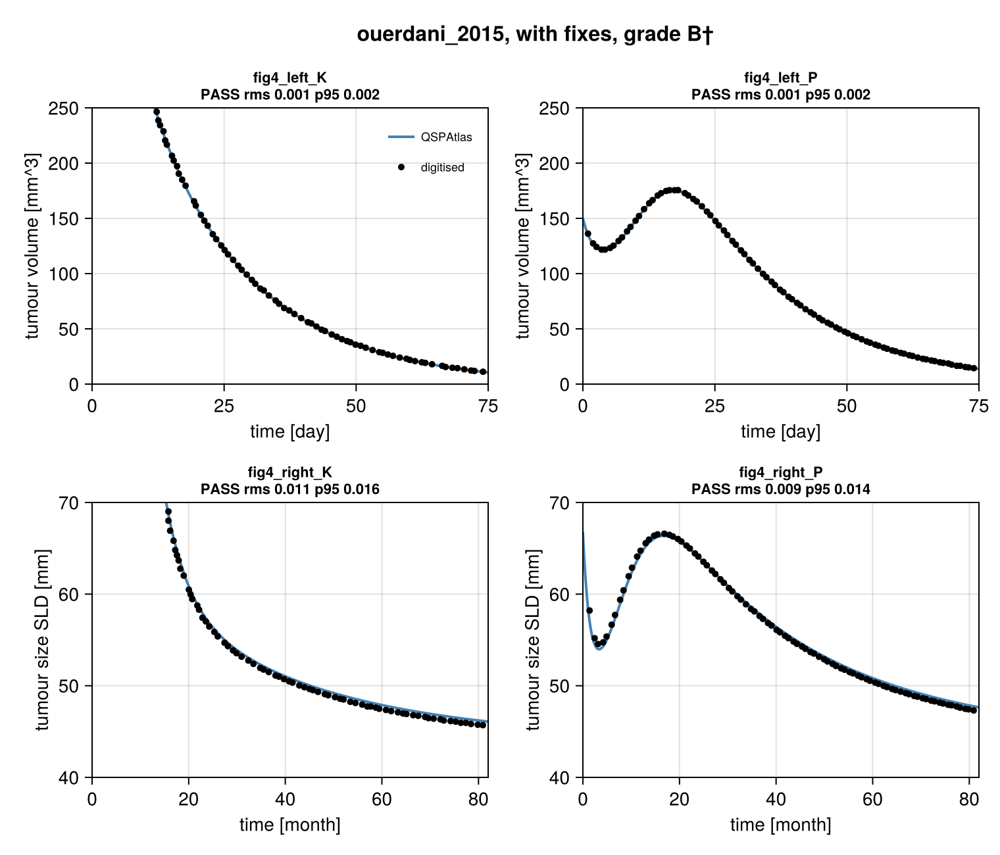
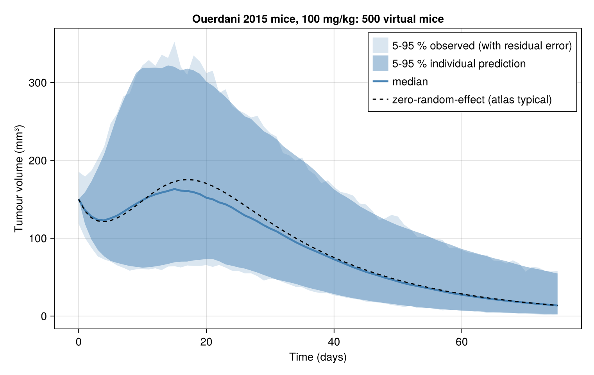

QSP Reproducibility Atlas
Work in progress. These readings of the papers have not yet been checked with the papers' authors. Corrections are welcome: please open an issue on GitHub.
Published PK/PD and quantitative systems pharmacology (QSP) models, rebuilt from their papers in Julia (ModelingToolkit.jl, OrdinaryDiffEq.jl), checked against the papers' own figures and graded. The rebuilds are done by AI coding agents and reviewed by the author (how models are built).
Result
1 of 6 reproduce (0 as published, 1 after documented fixes, 1 of those with inputs read from the figure (†)); 5 run but do not match; 0 cannot be run from the published information.
| model | paper | grade | strict grade | curves passing (as published / with fixes) | meaning |
|---|---|---|---|---|---|
| fornari_2019 | Fornari C, et al. CPT Pharmacometrics Syst Pharmacol 2019;8:858-868 | C (fig3: B, fig4: C) | D | did not run / 6 of 9 | runs, does not match |
| hutchinson_2016 | Hutchinson LG, et al. CPT Pharmacometrics Syst Pharmacol 2016;5:636-645 | C (fig2: B, fig6: C) | D | 0 of 30 / 22 of 30 | runs, does not match |
| lindauer_2017 | Lindauer A, et al. CPT Pharmacometrics Syst Pharmacol 2017;6:11-20 | C | D | 0 of 5 / 1 of 5 | runs, does not match |
| ouerdani_2015 | Ouerdani A, et al. CPT Pharmacometrics Syst Pharmacol 2015;4:660-668 | B† | D | 0 of 4 / 4 of 4 | matches after documented fixes; some inputs not stated in the paper were read from the target figure |
| stein_2019 | Stein AM, et al. CPT Pharmacometrics Syst Pharmacol 2019;8:285-295 | C | D | 2 of 6 / 4 of 6 | runs, does not match |
| stroh_2019 | Stroh M, et al. CPT Pharmacometrics Syst Pharmacol 2019;8:676-684 | C (fig3: C, fig4: C) | D | 14 of 35 / 18 of 35 | runs, does not match |
Each model page lists the targets, the per-curve errors, every fix with its evidence, and the problems found in the paper. The method page explains the digitising and scoring.
First release
Six oncology models from CPT: Pharmacometrics & Systems Pharmacology, chosen to span model types: tumour growth with angiogenesis (pazopanib), transient vascular normalisation (antiangiogenic antibodies), translational antibody PK/PD with tumour growth inhibition (pembrolizumab), a haematopoiesis systems pharmacology model of bone-marrow toxicity (carboplatin), a QSP model of a masked tumour-activated antibody, and CAR-T cellular kinetics (tisagenlecleucel).
Five are graded on typical-value curves. The CAR-T model is graded on a visual predictive check: the authors' shaded intervals of simulated percentiles are compared with percentiles from our own population simulation (see Population simulation). Lines computed from observed data are never grade-bearing.
What it looks like
A model that reproduces: Ouerdani 2015, Figure 4, our simulation (blue) against points digitised from the paper's own curves (black).

A population figure that does not: Stein 2019, Figure 3a, percentile bands from 800 simulated replicates of the 90-patient study. The early expansion matches the authors' bands; the upper tail and the persistence phase fall below them.

Population simulation: 500 virtual mice from the Ouerdani model with the paper's between-subject variability and residual error. Simulating 10,000 subjects takes 1 to 4.3 s on a standard 4-thread GitHub runner (benchmarks).

Using it
To rerun the atlas, clone the repository (each reproduce() writes its score file and figures into its own model folder):
git clone https://github.com/singhharsh1708/QSPAtlas.jl
cd QSPAtlas.jl
julia --project -e 'using Pkg; Pkg.instantiate(); Pkg.test()' # reruns every modelusing QSPAtlas
m = Module(); Base.include(m, joinpath(models_dir(), "ouerdani_2015", "reproduce.jl"))
rep = m.reproduce() # simulates, scores every curve, writes score.toml and figures
grade_label(rep) # "B†"For the population simulation layer on your own models, add the package:
using Pkg
Pkg.add(url = "https://github.com/singhharsh1708/QSPAtlas.jl")